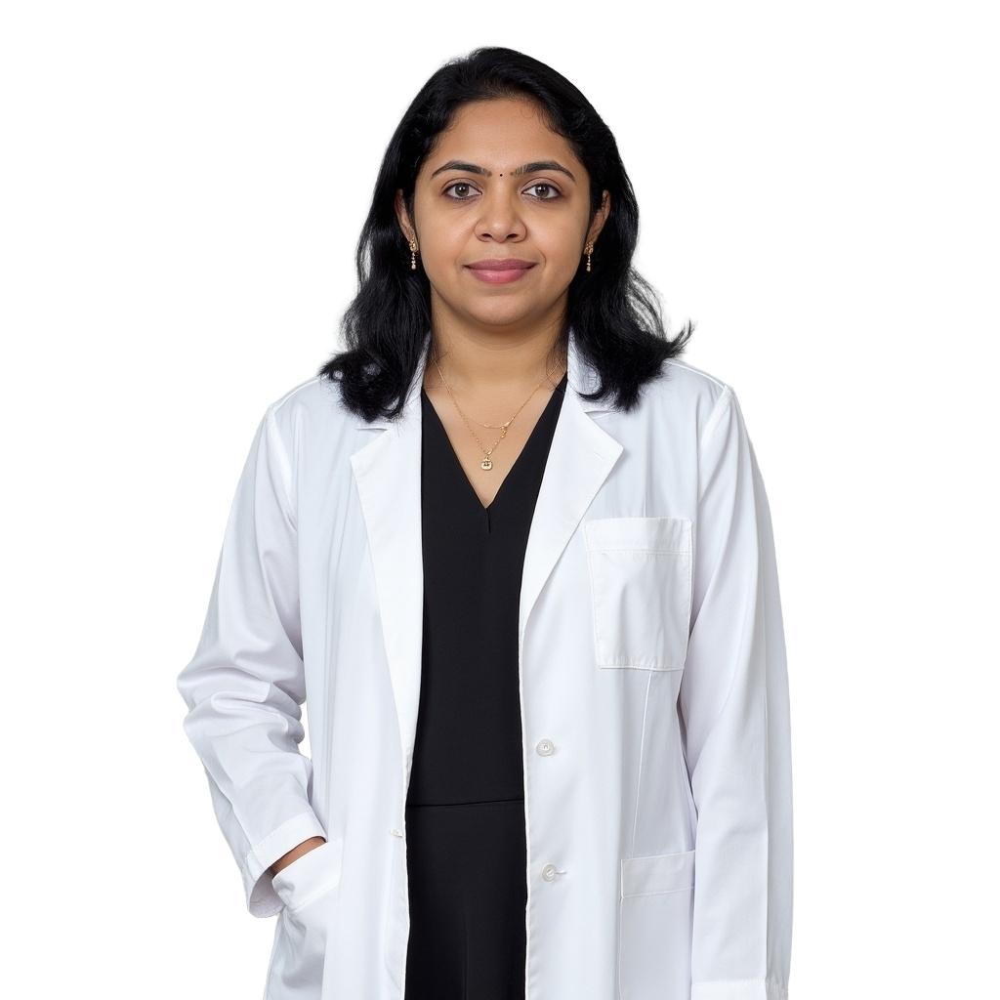
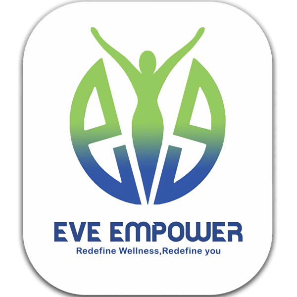

Empowering Women Through Every Stage of Life.
Expert Gynaecology & Obstetric Care in Abu Dhabi. Combining precision with compassionate wellness.

Dr. Priyadarshini Lingaraj
Dr. Priyadarshini Lingaraj is a highly accomplished Specialist Gynaecologist and Obstetrician with over 12 years of rich clinical experience. Currently practising at NMC Speciality Hospital, Abu Dhabi, she has built a reputation for excellence in both complex surgical procedures and compassionate patient care.
Her expertise spans the full spectrum of women's reproductive health — from routine gynaecological concerns to the most complex high-risk pregnancies and advanced laparoscopic surgeries. She has performed over 1,000 laparoscopic surgeries and overseen more than 1,000 deliveries, including high-risk cases involving gestational diabetes, preeclampsia, multiple pregnancies, and preterm labour.
Beyond the clinic, Dr. Priya is a passionate women's health advocate. She mentors future doctors through StudyMedic and empowers women through EveEmpower.com. She is fluent in English, Tamil, Telugu, Hindi, and Malayalam.
1,000+ Laparoscopic Surgeries
Outstanding minimally invasive surgical outcomes
1,000+ Safe Deliveries
Including complex high-risk multiple pregnancies
Multilingual Care
Tamil, Telugu, Hindi, Malayalam & English
Medical Educator
Mentoring future doctors globally through StudyMedic
Her Vision
"Every woman deserves world-class medical care delivered with dignity and compassion. Health is not just the absence of disease; it is the presence of complete physical, mental, and social well-being."
— Dr. Priyadarshini Lingaraj

EveEmpower.com
Holistic women's wellness platform sharing evidence-based health education and empowerment resources.
Visit Website →StudyMedic
As a senior faculty member, Dr. Priya mentors doctors preparing for postgraduate OBG exams globally.
Learn More →Comprehensive Women's Healthcare
Dr. Priyadarshini brings surgical precision and compassionate care across three core areas — Obstetrics, Gynaecology, and Women's Wellness.
Obstetrics & Maternity Care
Expert care through every stage of pregnancy — from your first prenatal visit to safe delivery and postnatal recovery.
High-Risk Pregnancy
Expert management of gestational diabetes, preeclampsia, placenta previa, preterm labour, and other complex conditions.
Fetal Medicine & Monitoring
Advanced fetal surveillance, anomaly scans, Doppler studies, and biophysical profile assessments.
Antenatal Care
Comprehensive prenatal check-ups, nutritional guidance, vaccination schedules, and birth planning support.
Normal Vaginal Delivery
Skilled support for natural, spontaneous, or assisted vaginal deliveries with minimum intervention.
Caesarean Section
Safe planned and emergency C-sections with careful surgical technique and post-operative care.
Multiple Pregnancy Care
Specialised monitoring and management for twin and triplet pregnancies from conception through delivery.
Postnatal Care
Post-delivery follow-up, breastfeeding support, mental health screening, and recovery guidance.
Pregnancy Loss Support
Compassionate care for miscarriage, ectopic pregnancy, and stillbirth with sensitivity and dignity.
Advanced Gynaecology
Minimally invasive surgical solutions with the latest techniques — faster recovery, less pain, and exceptional outcomes.
Diagnostic Laparoscopy
Minimally invasive keyhole diagnosis for pelvic pain, infertility investigation, and unexplained symptoms.
Endometriosis Treatment
Surgical removal of endometrial implants to relieve pain, restore fertility, and improve quality of life.
Ovarian Cystectomy
Laparoscopic removal of ovarian cysts while preserving ovarian function and fertility.
Fibroid (Myomectomy)
Fibroid removal via laparoscopic or hysteroscopic approach while preserving the uterus for future pregnancies.
Menstrual Disorders
Diagnosis and treatment of heavy periods, irregular cycles, dysmenorrhoea, and amenorrhoea.
PCOS Management
Comprehensive PCOS treatment — hormonal balance, weight management, and fertility support.
Infertility Evaluation
In-depth investigation of female infertility causes and personalised treatment pathways to achieve pregnancy.
Hysterectomy
Laparoscopic hysterectomy for fibroids, cancer, or other conditions — minimally invasive approach.
Women's Wellness & Preventive Care
Holistic, preventive healthcare for women at every life stage — because great health is built, not just treated.
Menopause Management
Hormone therapy, lifestyle counselling, and symptom management to navigate menopause with confidence.
Cervical Cancer Screening
Pap smear tests, HPV testing, colposcopy, and LEEP procedures for early detection and prevention.
Preventive Gynaecological Check
Annual well-woman exams including pelvic assessment, breast examination, and personalised health screening.
Contraception Counselling
Expert guidance on contraceptive options — from hormonal methods to IUDs and long-acting solutions.
Lifestyle Medicine
Nutrition, exercise, stress management, and holistic guidance to optimise health and hormonal balance.
STI Screening & Treatment
Confidential, non-judgemental screening and treatment for sexually transmitted infections.
Pre-Conception Planning
Preparing your body for pregnancy — health optimisation, folic acid counselling, genetic screening guidance.
Telemedicine Consultations
Convenient online consultations for follow-ups, second opinions, and remote gynaecological advice.
Words From Those
Who Trust Dr. Priya
Dr. Priyadarshini is absolutely wonderful! She made me feel so comfortable throughout my entire pregnancy. Her calm demeanor and expertise gave me confidence, especially during my high-risk delivery. I couldn't have asked for a more caring doctor.
I was so nervous about my surgery, but Dr. Priya put me at ease immediately. She explained every step clearly and her laparoscopic procedure was seamless. The recovery was so much faster than I expected. She is truly a gifted surgeon!
Dr. Priya is exceptional — she speaks Tamil which was such a comfort to me! She took time to understand my concerns about my pregnancy and was always available to answer questions. She delivered my baby safely and with so much care. Forever grateful!
After years of struggling with PCOS and irregular periods, Dr. Priyadarshini finally gave me a clear diagnosis and a treatment plan that actually worked. Within 3 months, I noticed a significant improvement. She listens with genuine empathy.
I was referred to Dr. Priya for my high-risk twin pregnancy. Her monitoring was meticulous and I felt safe throughout. Both my babies are healthy and I owe that to her expertise. She goes above and beyond for her patients every single time.
Frequently Asked Questions
Everything you need to know before your first visit.